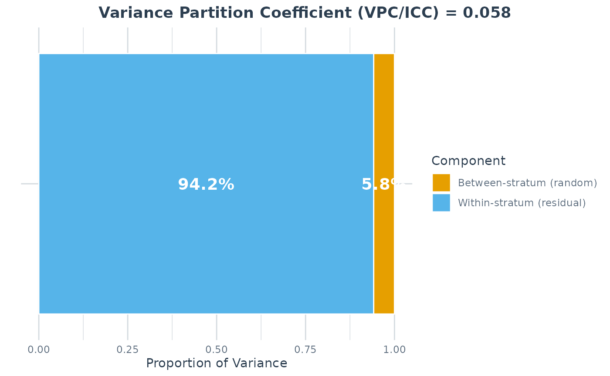
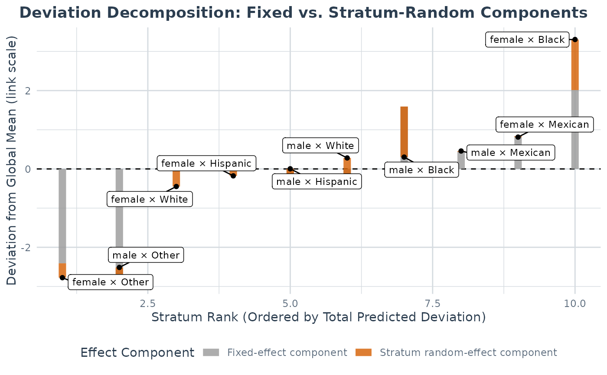
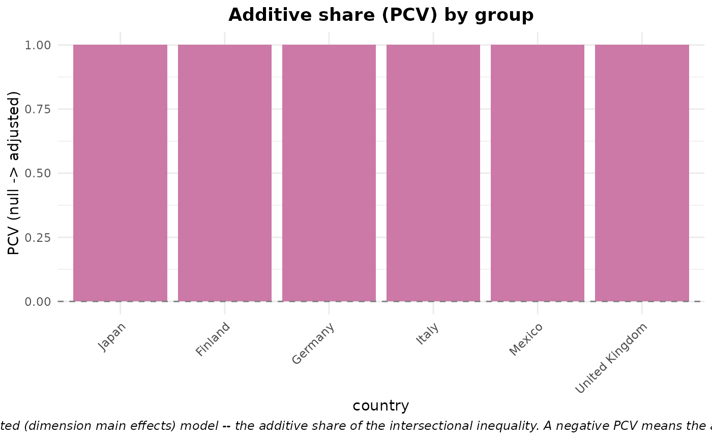
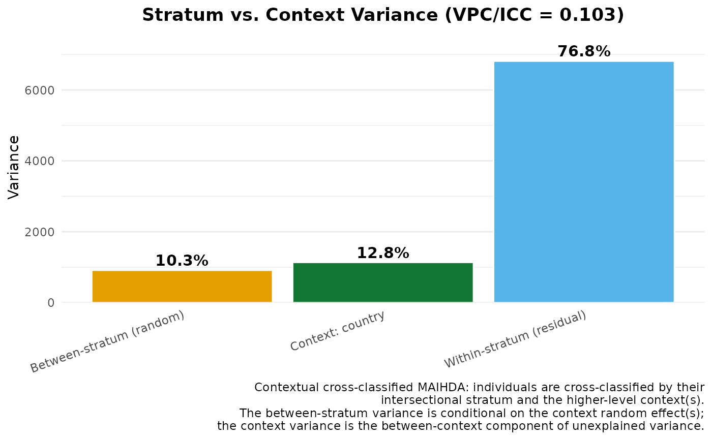

A single high-level entry point that runs the standard two-model MAIHDA workflow and returns one bundled object. It fits the null model (covariates plus the intersectional random intercept, excluding the stratum dimensions' main effects) and the adjusted model (the null plus the additive main effects of the stratum-defining dimensions), summarises the variance partition (VPC/ICC) of the null model, and reports the PCV – the proportional change in between-stratum variance from the null to the adjusted model, i.e. the additive share of the intersectional inequality. When a higher-level grouping variable is supplied it also compares this decomposition across that variable's levels.
Usage
maihda(
formula,
data,
group = NULL,
context = NULL,
engine = "lme4",
family = "gaussian",
decomposition = c("two-model", "crossed-dimensions", "longitudinal"),
autobin = TRUE,
shared_strata = TRUE,
min_group_n = 30,
bootstrap = FALSE,
n_boot = 1000,
conf_level = 0.95,
response_vpc = FALSE,
seed = NULL,
sampling_weights = NULL,
id = NULL,
time = NULL,
time_degree = 1,
interactions = TRUE,
estimation = c("fitted", "ML"),
...
)Arguments
- formula
A model formula, using either the intersectional shorthand
outcome ~ covars + (1 | var1:var2)or... + (1 | stratum)whendataalready has astratumcolumn frommake_strata. The dimensions' additive main effects may be listed (the fully-specified adjusted model) or omitted (added automatically, with a message); see Details.- data
A data frame with the model variables (and the
groupvariable, if used).- group
Optional character string naming a higher-level grouping variable (e.g.
"country"). When supplied,compare_maihda_groupsis run and attached to the result.groupruns a stratified analysis (one independent model per level); to instead model a higher level jointly, crossed with the strata, usecontext. The two are different designs but they compose: supplying both runs the stratified comparison where each per-group fit is itself a contextual cross-classified model (seecontext).- context
Optional character vector naming higher-level context column(s) in
data(e.g."school","hospital","region"), forwarded tofit_maihda. Each context enters every fitted model as a crossed random intercept –outcome ~ covars + (1 | stratum) + (1 | context)– the contextual cross-classified MAIHDA of the literature. The summaries then partition the unexplained variance into between-stratum vs. between-context vs. residual, the headline VPC/ICC becomes the between-stratum share net of the context, and the PCV decomposition is computed with the context partialled out (the context random intercept is carried by both the null and the adjusted model). May be combined withgroup: the stratified comparison then fits a contextual cross-classified model within each group and reports each group's stratum-vs-context partition (a per-group subset shrinks the context level count, so weak identification is warned about per group). Not available for thewemix/ordinalengines (they fit no crossed random effect); a context with few levels weakly identifies its variance (considerengine = "brms").- engine
Modeling engine, "lme4" (default), "brms", "wemix" (the design-weighted pseudo-maximum-likelihood fit; requires
sampling_weightsand is selected automatically when they are supplied with the default engine), or "ordinal" (cumulative link mixed model viaordinal::clmm(); selected automatically for an ordinal family or an ordered-factor outcome).- family
Model family. Default "gaussian". As in
fit_maihda, a binary outcome is auto-detected whenfamilyis left at the default, and the same resolved family is then used for the group comparison so all models agree.- decomposition
How to decompose the intersectional inequality into additive and interaction parts.
"two-model"(default) is the classic MAIHDA approach: a null model and an adjusted model (the dimensions' additive main effects as fixed effects), with the additive share read from the PCV (proportional change in between-stratum variance)."crossed-dimensions"fits a single model that enters each dimension's additive main effect as a random intercept –outcome ~ covars + (1 | dim1) + ... + (1 | stratum)– so each dimension's RE variance is its additive contribution and the intersection (stratum) RE variance is the interaction beyond additive; the additive and interaction shares of the total between-strata variance are read directly from that one fit. The two modes target the same scientific question with different estimators, so their additive shares are conceptually parallel but not numerically identical. The crossed-dimensions additive share is a partial-pooling estimate: dimensions with few levels (e.g. a binary sex variable, whose variance is estimated from two groups) are poorly identified and often give a singular lme4 fit – thebrmsengine handles this better. See Details. ("cross-classified"is accepted as a deprecated alias for"crossed-dimensions", with a warning: in the MAIHDA literature “cross-classified” refers to the contextual stratum-by-place model, which this package fits viacontext.)"longitudinal"fits a 3-level growth-curve MAIHDA (requiresidandtime; selected automatically when they are supplied): a null and an adjusted growth model, where the adjusted model adds the dimensions' main effects and their interactions with time (dim:time). The between-stratum variance is then time-varying and the PCV is reported separately for the baseline (intercept) and the slope variance – the additive-vs-multiplicative split of the intersectional trajectory inequality (Bell, Evans, Holman & Leckie 2024). As with the two-model PCV, theestimationargument sets the variance-estimation basis: the default"fitted"keeps each REMLlmergrowth fit's own variance, while"ML"refits them with maximum likelihood before the null-vs-adjusted comparison (REML variances are not comparable across different fixed effects; seecalculate_pcv). The reported time-varying VPC always keeps each fit's own (REML) estimate. Seefit_maihda.- autobin
Logical passed to
make_strata; tertile-bins numeric grouping variables. Default TRUE.Logical, forwarded to
compare_maihda_groupswhengroupis supplied: build strata once on the full data so VPCs are comparable across groups (TRUE, default) or rebuild them within each group.- min_group_n
Minimum group size for the per-group comparison, forwarded to
compare_maihda_groups. Default 30.- bootstrap
Logical; compute parametric-bootstrap VPC confidence intervals (lme4 only) for both the overall summary and the per-group comparison. Default FALSE.
- n_boot
Number of bootstrap samples when
bootstrap = TRUE.- conf_level
Confidence level for bootstrap intervals. Default 0.95.
- response_vpc
Logical; for a binomial (lme4) outcome, also attach the response-scale VPC (
maihda_vpc_response) to the model summaries. It is estimated by simulation, so it is opt-in (defaultFALSE) and usesseed. The discriminatory accuracy (AUC + MOR) is attached automatically for a binomial/Bernoulli outcome regardless of this flag (see Details).- seed
Optional integer seed for the response-scale VPC simulation.
- sampling_weights
Optional name of a sampling-weight column for a weighted MAIHDA on survey data; see
fit_maihdafor the full semantics (engine selection, the pseudo-likelihood weighting, and – importantly – why a single person weight does not deliver design-based inference for a multistage or stratified sample). Both the null and the adjusted model (and any per-group fits) use the same weights, so the PCV is a weighted decomposition. Not compatible withengine = "lme4",decomposition = "crossed-dimensions"under the wemix engine, orbootstrap = TRUE.- id, time, time_degree
For a longitudinal MAIHDA: the person/unit identifier column, the numeric measurement-time column, and the growth-curve polynomial degree (1 = linear). Supplying
id/timeselectsdecomposition = "longitudinal". Seefit_maihdafor the model structure;group,context, andsampling_weightsare not supported alongside them. DefaultNULL(cross-sectional).- interactions
Whether to compute the per-stratum interaction diagnostic (
maihda_interactions) on the adjusted / crossed-dimensions model and attach it as theinteractionsslot, surfaced inprint().TRUE(default) uses the diagnostic's own default correction (adjust = "BH", FDR – since scanning all strata is a screening question);FALSEskips it; or pass ap.adjustmethod name – including"none"for the uncorrected, per-stratum individual-testing view. Usesconf_level. Not computed for a longitudinal decomposition. The computation is cheap (it reads the stratum estimates the summary already holds; no refit).- estimation
Variance-estimation basis for the PCV (
"two-model"and"longitudinal"decompositions),"fitted"(default) or"ML"; seecalculate_pcv."fitted"differences each model's own between-stratum variance (the REML estimate for a Gaussianlmerfit, assummary()reports);"ML"refits REMLlmerfits with maximum likelihood first. Affects Gaussianlmerfits only.- ...
Additional arguments passed to
fit_maihda(and on tolmer/glmer).
Value
An object of class maihda_analysis: a list with
- model
the fitted
maihda_model(seefit_maihda); the null model in"two-model"mode, or the single crossed-dimensions model in"crossed-dimensions"mode- summary
the model's
maihda_summary(VPC/ICC, variance components, stratum estimates; plus the additive/interactiondecompositionin crossed-dimensions mode, and the stratum-vs-contextcontextpartition whencontextis supplied)- model_adjusted
the fitted adjusted
maihda_model("two-model"and"longitudinal"modes;NULLotherwise)- summary_adjusted
the adjusted model's
maihda_summary, orNULL- pcv
the proportional change in variance: the
pcv_resultfromcalculate_pcvin"two-model"mode, or amaihda_long_pcv(the intercept/slope and time-specific PCV) in"longitudinal"mode;NULLotherwise. Both use the variance-estimation basis set byestimation: the default"fitted"keeps each Gaussianlmerfit's own REML variance (matching the single-model summaries), while"ML"refits the REML fits with maximum likelihood for a correction-free cross-model comparison (seecalculate_pcv)- decomposition
the additive/interaction partition (additive and interaction variances and shares, per-dimension variances;
"crossed-dimensions"mode only,NULLotherwise)- groups
a
maihda_group_comparisonwhengroupis supplied, otherwiseNULL- interactions
the
maihda_interactionsdiagnostic (per-stratum interaction BLUPs and flags) wheninteractionsis notFALSE, otherwiseNULL- mode
"two-model","crossed-dimensions", or"longitudinal"- context_vars
the context variable name(s) when
contextwas supplied, otherwiseNULL- formula, adjusted_formula, group_var, call
bookkeeping for printing
Details
Binomial companions. For a binary outcome the model summaries also carry
the discriminatory accuracy (AUC / C-statistic and Median Odds Ratio) – the "DA"
in MAIHDA – automatically, so the null model's strata-only AUC sits alongside its
VPC; set response_vpc = TRUE to add the (simulation-based) response-scale
VPC as well. These are read from summary(x) and the attached
summary_adjusted, and the headline print() shows the null-model AUC.
This is a convenience wrapper around fit_maihda,
calculate_pcv, summary.maihda_model and
compare_maihda_groups. It always runs a decomposition,
never a single plain fit: by default the two-model null/adjusted pair, or –
with decomposition = "crossed-dimensions" – one crossed model whose
additive dimension random effects carry the additive share. For a single
undecomposed fit (e.g. just the null-model VPC / discriminatory accuracy),
call fit_maihda directly.
The dimensions' additive main effects. You may write them in the formula –
the fully-specified, lme4-native adjusted model
outcome ~ covars + var1 + var2 + (1 | var1:var2) – or omit them. Either way
the null excludes the dimension main effects and the adjusted includes
them: when the formula already lists them it is taken as the adjusted model and the
null is derived by dropping them; when they are missing maihda() adds them to
the adjusted model and emits a message() so the decomposition stays explicit.
Only the additive main effects belong here: a fixed interaction among the
stratum dimensions – var1 * var2, which R expands to
var1 + var2 + var1:var2 – duplicates the intersectional stratum random
intercept (it absorbs the between-stratum variance into fixed cell means, which
makes the PCV invalid), so it is rejected with an error. Write
var1 + var2; the intersection is estimated by the stratum random effect (and
quantified by decomposition = "crossed-dimensions" or
maihda_interactions).
The dimensions themselves are read from the random term: the shorthand
(1 | var1:var2) and make_strata both record them, and a numeric
dimension that make_strata() auto-binned enters the adjusted model as its
reconstructed tertile factor (matching the strata), not as a linear term. Because
maihda() is intrinsically a decomposition, it errors (rather than
returning a null-only result) when it cannot build the adjusted model – when the
dimensions cannot be recovered (a hand-built stratum column records none) or
there is only one dimension (no intersection to decompose). Use fit_maihda
for those single-model fits.
Numeric stratum dimensions
The stratum-defining dimensions are categorical. A factor or character dimension
enters the adjusted model as a categorical main effect, and a numeric dimension with
more than 10 unique values is tertile-binned when autobin = TRUE (see
make_strata). A numeric dimension that is not auto-binned – a
category code such as education = 1, 2, 3 (few unique values), or a many-valued
numeric fitted with autobin = FALSE – enters the adjusted model as a single
linear fixed effect rather than categorical main effects, which changes the
PCV/decomposition interpretation. maihda() therefore warns in that
case (for three or more distinct values – a binary numeric dimension is exempt, since
with two levels a linear term and a factor are equivalent): wrap category codes in
factor() before fitting, or, for a genuinely continuous variable, use it as a
covariate rather than a stratum dimension.
See also
fit_maihda for the single-model fitter,
compare_maihda_groups for the group comparison, and
summary.maihda_model for the variance summary.
Examples
# \donttest{
data(maihda_health_data)
# One call: null + adjusted fit, VPC summary, and PCV decomposition. Writing the
# dimensions' additive main effects (Gender + Race) gives the fully-specified
# adjusted model; maihda() derives the null by dropping them.
a <- maihda(BMI ~ Age + Gender + Race + (1 | Gender:Race), data = maihda_health_data)
a # VPC (null) and PCV (null -> adjusted)
#> MAIHDA Analysis
#> ===============
#>
#> Null formula: BMI ~ Age + (1 | stratum)
#> Adjusted formula:BMI ~ Age + Gender + Race + (1 | stratum)
#> Engine: lme4 | Family: gaussian
#> VPC/ICC (null): 0.0585
#> PCV (null -> adjusted): 0.4963
#> Between-stratum variance: 2.7383 (null) -> 1.3792 (adjusted)
#> ~49.6% of the between-stratum variance is additive (the dimensions' main
#> effects); the remainder is the between-stratum variance remaining after the
#> additive main effects -- a model-dependent quantity
#> Strata: 10
#> Intersectional interactions: 4 of 10 strata flagged (95% interval, BH-adjusted)
#> strongest: male × Black (-1.290, below)
#>
#> Use summary() for variance components and plot(type = ...) for figures.
#>
a$pcv # proportional change in between-stratum variance
#> Proportional Change in Variance (PCV)
#> =====================================
#>
#> PCV: 0.4963
#>
#> Variance basis: as fitted (REML for Gaussian lmer, matching summary())
#>
#> Between-stratum variance:
#> Model 1: 2.738282
#> Model 2: 1.379216
#> Change: 1.359066 (49.63%)
#>
#> Interpretation (PCV is the proportional change in between-stratum
#> variance between the models):
#> Between-stratum variance is 49.6% lower in Model 2 than in Model 1.
a$formula # null: BMI ~ Age + (1 | stratum)
#> BMI ~ Age + (1 | stratum)
#> <environment: 0x56030bea0e10>
a$adjusted_formula # adjusted: null + Gender + Race main effects
#> BMI ~ Age + Gender + Race + (1 | stratum)
#> <environment: 0x56030b0880d8>
# Omitting them is equivalent -- maihda() adds them to the adjusted model and
# emits a message; the null and PCV are identical to the explicit form above.
a0 <- maihda(BMI ~ Age + (1 | Gender:Race), data = maihda_health_data)
#> maihda(): added the additive main effect(s) of the stratum dimension(s) Gender, Race to the adjusted model; the null model excludes them. List them in the formula to specify the adjusted model explicitly.
plot(a, type = "vpc") # null model

plot(a, type = "effect_decomp")# adjusted model (additive vs intersectional)

# Crossed-dimensions decomposition: one model, the dimensions' main effects entered
# as RANDOM intercepts. The additive and interaction shares of the between-strata
# variance are read directly from the single fit (no null/adjusted pair).
cc <- maihda(BMI ~ Age + (1 | Gender:Race), data = maihda_health_data,
decomposition = "crossed-dimensions")
#> boundary (singular) fit: see help('isSingular')
cc # VPC and additive/interaction shares
#> MAIHDA Analysis
#> ===============
#>
#> Decomposition: crossed-dimensions (single model)
#> Formula: BMI ~ Age + (1 | Gender) + (1 | Race) + (1 | stratum)
#> Engine: lme4 | Family: gaussian
#> Fit diagnostics:
#> Singular fit: at least one variance component is estimated at (or near) zero.
#> The between-stratum variance and any VPC/PCV derived from it may be unreliable.
#> Convergence warnings reported by lme4:
#> - boundary (singular) fit: see help('isSingular')
#>
#>
#> VPC/ICC: 0.0637
#>
#> Additive vs. Intersectional Decomposition (crossed-dimensions):
#> Additive (sum of dimension main effects) variance: 1.8415
#> Intersectional interaction variance: 1.1593
#> Total between-strata variance: 3.0008
#> Additive share of between-strata variance: 61.4%
#> Interaction share of between-strata variance: 38.6%
#> Per-dimension additive variance:
#> Gender: 0.0000
#> Race: 1.8415
#> Note: the additive share is the crossed-dimensions analogue of the PCV but
#> a different estimator; interpret the interaction share cautiously.
#>
#> Strata: 10
#> Intersectional interactions: 0 of 10 strata flagged (95% interval, BH-adjusted)
#>
#> Use summary() for variance components and plot(type = ...) for figures.
#>
cc$decomposition$additive_share # crossed-dimensions analogue of the PCV
#> [1] 0.6136712
cc$formula # BMI ~ Age + (1|Gender) + (1|Race) + (1|stratum)
#> BMI ~ Age + (1 | Gender) + (1 | Race) + (1 | stratum)
#> <environment: 0x560301df7c00>
# Add a higher-level grouping variable to also compare across its levels.
# maihda_country_data has a real country grouping (PISA achievement data):
data(maihda_country_data)
a2 <- maihda(math ~ 1 + (1 | gender:ses), data = maihda_country_data,
group = "country")
#> boundary (singular) fit: see help('isSingular')
#> maihda(): added the additive main effect(s) of the stratum dimension(s) gender, ses to the adjusted model; the null model excludes them. List them in the formula to specify the adjusted model explicitly.
#> boundary (singular) fit: see help('isSingular')
#> boundary (singular) fit: see help('isSingular')
#> boundary (singular) fit: see help('isSingular')
#> boundary (singular) fit: see help('isSingular')
#> boundary (singular) fit: see help('isSingular')
a2
#> MAIHDA Analysis
#> ===============
#>
#> Null formula: math ~ (1 | stratum)
#> Adjusted formula:math ~ (1 | stratum) + gender + ses
#> Engine: lme4 | Family: gaussian
#> VPC/ICC (null): 0.1493
#> PCV (null -> adjusted): 1.0000
#> Between-stratum variance: 1352.2436 (null) -> 0.0000 (adjusted)
#> ~100.0% of the between-stratum variance is additive (the dimensions' main
#> effects); the remainder is the between-stratum variance remaining after the
#> additive main effects -- a model-dependent quantity
#> Strata: 6
#> Intersectional interactions: 0 of 6 strata flagged (95% interval, BH-adjusted)
#>
#> Group comparison by 'country':
#> MAIHDA Group Comparison
#> =======================
#>
#> Group variable: country
#> Engine: lme4 | Family: gaussian | Strata: shared/global
#> Variance basis: as fitted (REML for Gaussian lmer, matching summary())
#>
#> group n n_strata vpc var_between var_other var_residual pcv
#> Finland 600 6 0.10994 785.8 0 6361 1.0000
#> Germany 600 6 0.14448 1271.6 0 7529 1.0000
#> Italy 600 6 0.11890 1065.3 0 7895 1.0000
#> Japan 600 6 0.13344 1032.3 0 6704 0.9266
#> Mexico 600 6 0.13649 771.5 0 4881 1.0000
#> United Kingdom 600 6 0.06011 470.5 0 7357 1.0000
#> var_between_adjusted var_between_adjusted_ml pcv_status status
#> 0.00 0.00 singular ok
#> 0.00 0.00 singular ok
#> 0.00 0.00 singular ok
#> 75.78 75.78 ok ok
#> 0.00 0.00 singular ok
#> 0.00 0.00 singular ok
#>
#> Use summary() for variance components and plot(type = ...) for figures.
#>
plot(a2, type = "group_vpc")
 plot(a2, type = "group_pcv")
plot(a2, type = "group_pcv")

# Contextual cross-classified MAIHDA: instead of one model per country (group=),
# model the strata CROSSED with country in a single fit. The summary partitions
# the unexplained variance into between-stratum vs. between-country vs. residual,
# and the PCV is computed with country partialled out.
a3 <- maihda(math ~ 1 + (1 | gender:ses), data = maihda_country_data,
context = "country")
#> maihda(): added the additive main effect(s) of the stratum dimension(s) gender, ses to the adjusted model; the null model excludes them. List them in the formula to specify the adjusted model explicitly.
a3
#> MAIHDA Analysis
#> ===============
#>
#> Null formula: math ~ (1 | stratum) + (1 | country)
#> Adjusted formula:math ~ (1 | stratum) + (1 | country) + gender + ses
#> Engine: lme4 | Family: gaussian
#> Context: country (crossed contextual random intercept in the null and adjusted models)
#> VPC/ICC (null): 0.1032
#> Context share (null): 0.1283 (between-country share of unexplained variance)
#> PCV (null -> adjusted): 0.9978
#> Between-stratum variance: 915.2323 (null) -> 1.9877 (adjusted)
#> ~99.8% of the between-stratum variance is additive (the dimensions' main
#> effects); the remainder is the between-stratum variance remaining after the
#> additive main effects -- a model-dependent quantity
#> Strata: 6
#> Intersectional interactions: 0 of 6 strata flagged (95% interval, BH-adjusted)
#>
#> Use summary() for variance components and plot(type = ...) for figures.
#>
a3$summary$context$vpc_context_total # the country (general contextual) share
#> [1] 0.1282643
plot(a3, type = "context_vpc")

# }